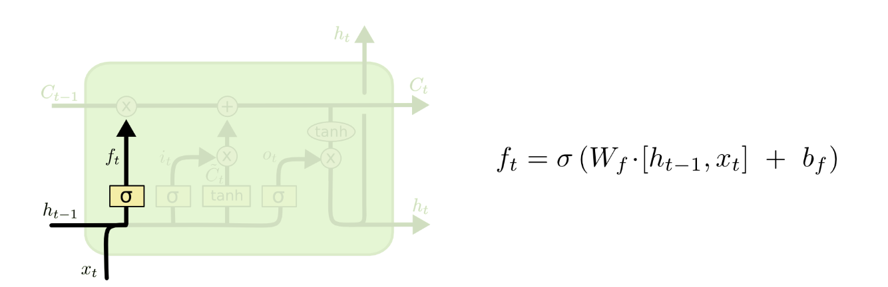
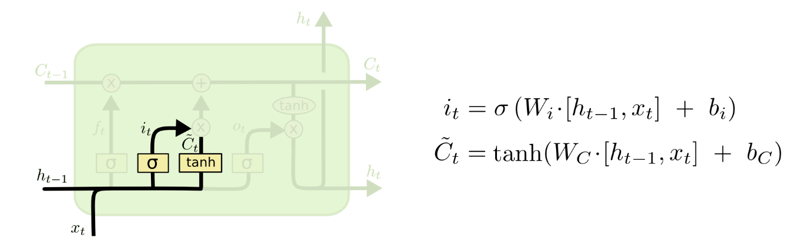
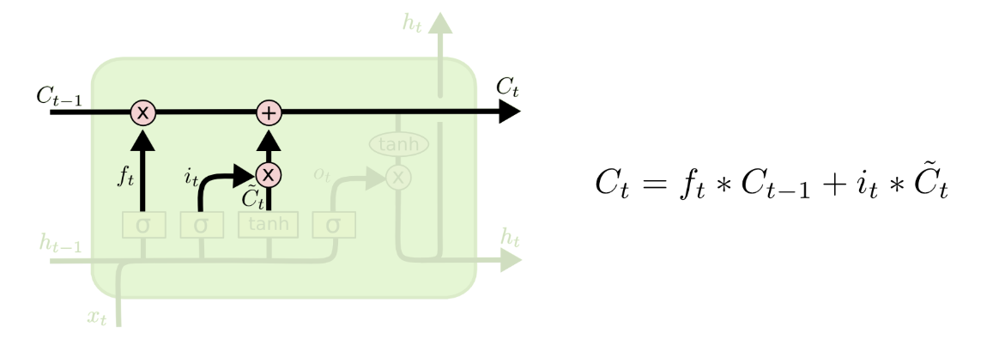
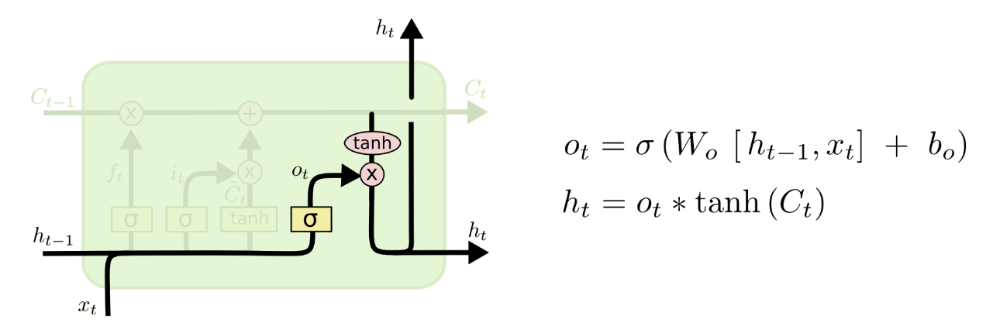
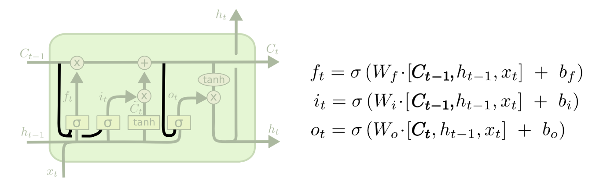
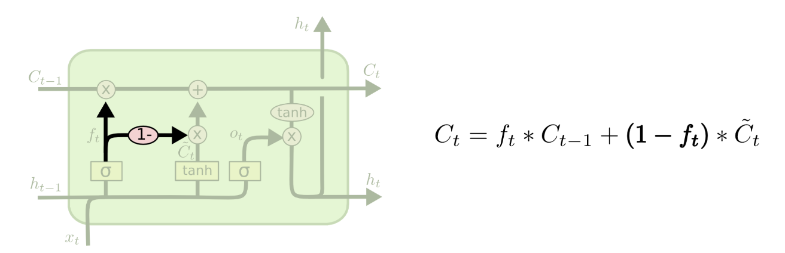

深入理解 LSTM
Table of Contents
翻译：Understanding LSTM Networks （未完）
RNN(Recurrent Neural Networks)
LSTM
LSTM 的核心思想
深入剖析 LSTM
LSTM 的第一步是决定什么信息要保留什么抛弃掉。这一步的决策使用过 sigmoid layer 来做，通常被称为遗忘门（\(forget \, gate \, layer\)）。输出为 0 到 1 的数字。 这串数字（list，非一个）用来决定 \(C_{t-1}\) 中数字是否保留。1 表示完全保留，0 表示完全舍弃。
依据前面的单词预测下一个词的例子中，LSTM cell(\(C_{i}\)) 可能包含出现过的主题，因此我们可以正确的使用指代词来表示这个主题。当我们看到一个新的主题 （subject）的时候，我们就希望忘记先前出现的主题(subject)。

下一步就是决定什么样的信息我们需要存储到 cell 状态中(\(C_{i}\))。第一个阶段是一个叫做 输入门 的 sigmoid 层, 决定什么值将会被更新。下一步， \(tanh\) 层会创建一个候选向量矩阵， \(\tilde{C}_t\), 这个可以加到状态 cell 中。接下来，我们会结合上面两步的过程，创建一个状态的更新。看下图。

下面，我们将老的 cell 状态信息，\(C_{t-1}\) 更新到新的 cell 状态 \(C_t\) 中。 我们将前面算的 \(f_t\) 和老的状态 \(C_{t-1}\) 相乘，然后加上 上面算出的 \(i_t*\tilde{C}_t\) 。

最后一步就是决定，我们要输出什么。输出的内容基于我们的 cell 状态，但是最终是一个过滤后的版本。 首先，我们通过一个 sigmoid 层决定 cell 状态中的哪部分作为输出 \(o_t\) 。接着，我们将 cell 状态(\(C_t\)) 通过一个 tanh 层（将值变为 -1 到 1 间的数） 并且乘上一步的 \(o_t\) ， 最终的输出为 \(h_t\) 。

LSTM 的变体
上面介绍的 LSTM 算是一个正常版本的结构，事实上几乎所有的 paper 中涉及到的 LSTM 都是一个稍微不同的版本。 差别虽然不大，但还是要提一下。
一个比较流行的变体是增加 “peephole” 连接，也就是各个门会看 cell 的状态。看下图就比较好理解了。

上面的 \(f_t\) 在计算的时候考虑到了 \(C_{t-1}\) , 这就是添加了所谓的 peephole 信息。
另外一个变体是使用耦合的遗忘和输入门。我们将这个决策综合使用，而不是单独的决策，什么该遗忘，什么信息该添加。

另一个，比较有意思的变体是 GRU(Gated Recurrent Unit), Cho, et al. (2014)。 它将遗忘和输入门综合作为更新门(update gate)。 另外，它结合 cell 状态和隐藏状态到一起。最终的模型要比标准的模型简单很多，并且变得比较流行起来。
上面只是众多变体中的几种，还有很多没有介绍到。至于哪种变体是最好的，Greff, et al. (2015) 这个论文有很好的比较。